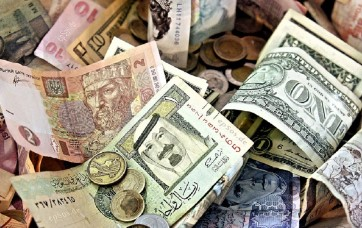

Podemos encontrar el origen del dinero en las transacciones que hace miles de años se hacían con cereales, gramos de plata, objetos de arcilla, conchitas de mar o semillas de cacao, hasta llegar a las monedas de metal acuñadas oficialmente por reyes en el antiguo Irak.

Las finanzas estudian los mercados de dinero, la obtención de recursos, las formas de ahorro e inversión, y el valor del dinero en el tiempo.

La inflación es un fenómeno económico que se caracteriza por un aumento general de los precios de bienes y servicios.
El valor del dinero en el tiempo hace referencia a un concepto económico que busca explicar el fenómeno por el cual el dinero presente.
Los economistas estiman que solo el 8% de dinero a nivel mundial existe de forma física, es decir, el 92% del dinero que se mueve en el mundo no existe físicamente.
Mercado de Dinero puede definirse como aquel en el que las Empresas, Bancos y Entidades Gubernamentales satisfacen sus necesidades de recursos financieros, mediante la emisión de instrumentos de financiamiento
El mercado de capitales es un mercado financiero donde se compran y venden valores, como acciones, bonos y deudas, para obtener financiamiento o realizar inversiones.

El mercado de divisas, también conocido como Forex (foreign exchange), es el espacio donde se lleva a cabo el intercambio de diferentes monedas a nivel global.
